CODING AGENTS AS PIXEL WORLD MODELS
traex/DeepSeek-V4.1-Flash · 0097
点击播放 · 原生 RGB 像素
逐轮保存的候选
回放视频、检查图与代码变化。
每份候选均可单独播放。实际图片检查记录在下方工具轨迹中。
候选 01播放与检查图
点击播放 · 原生 RGB 像素
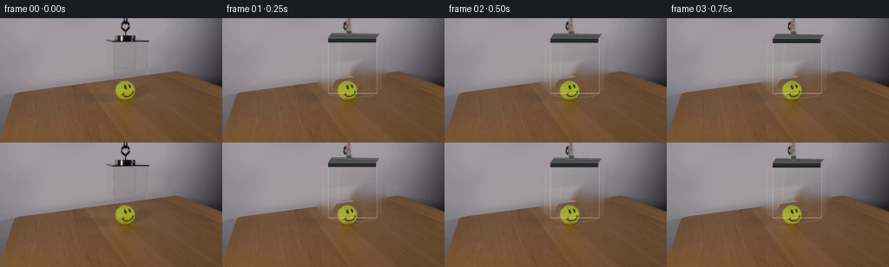
展开代码变化
--- 上一保存版本
+++ 本次保存版本
@@ -0,0 +1,273 @@
+from pathlib import Path
+
+import cv2
+import numpy as np
+from PIL import Image, ImageDraw
+
+import artifact_io
+
+
+ROOT = Path(__file__).resolve().parent
+WIDTH, HEIGHT = 256, 144
+FRAME_COUNT = 20
+FPS = 4
+SS = 4
+
+
+def inpaint_scene(source):
+ """Remove the suspended box and ball, leaving a clean locked-off plate."""
+ mask = np.zeros((HEIGHT, WIDTH), dtype=np.uint8)
+ box = np.array(
+ [
+ (110, 17),
+ (187, 17),
+ (190, 29),
+ (188, 89),
+ (180, 99),
+ (119, 99),
+ (109, 88),
+ (109, 27),
+ ],
+ dtype=np.int32,
+ )
+ cv2.fillPoly(mask, [box], 255)
+ cv2.line(mask, (146, 0), (146, 18), 255, 5, cv2.LINE_AA)
+ cv2.ellipse(mask, (144, 82), (18, 18), 0, 0, 360, 255, -1)
+ cv2.ellipse(mask, (144, 96), (19, 7), 0, 0, 360, 255, -1)
+
+ plate = cv2.inpaint(source, mask, 7, cv2.INPAINT_TELEA)
+
+ # The wall is a smooth photographic gradient. Rebuilding it row by row
+ # avoids the directional smears that large-radius inpainting can produce.
+ wall = np.zeros_like(plate)
+ for y in range(20, 100):
+ left = plate[y, 107].astype(np.float32)
+ right = plate[y, 193].astype(np.float32)
+ ramp = np.linspace(0.0, 1.0, 86, dtype=np.float32)[:, None]
+ wall[y, 108:194] = np.rint(left * (1.0 - ramp) + right * ramp).astype(np.uint8)
+
+ region = mask > 0
+ for y in range(20, 100):
+ for x in range(108, 194):
+ if not region[y, x]:
+ continue
+ table_edge = 67.0 - 0.118 * x
+ if y < table_edge:
+ plate[y, x] = wall[y, x]
+
+ # Soften only the repaired area, then restore a little table grain.
+ soft = cv2.GaussianBlur(plate, (0, 0), 1.1)
+ feather = cv2.GaussianBlur(mask.astype(np.float32) / 255.0, (0, 0), 2.0)[..., None]
+ plate = np.rint(soft * feather + plate * (1.0 - feather)).astype(np.uint8)
+
+ rng = np.random.default_rng(97)
+ grain = rng.normal(0.0, 2.0, (HEIGHT, WIDTH, 1)).astype(np.float32)
+ table = np.zeros((HEIGHT, WIDTH, 1), dtype=np.float32)
+ yy, xx = np.mgrid[0:HEIGHT, 0:WIDTH]
+ table[..., 0] = yy > (68.0 - 0.12 * xx)
+ plate = np.clip(plate.astype(np.float32) + grain * table * feather, 0, 255).astype(np.uint8)
+ return plate
+
+
+def restore_ball(plate, source):
+ """Restore the photographed ball and its contact shadow over the clean plate."""
+ patch = source[64:102, 125:163]
+ mask = Image.new("L", (38 * SS, 38 * SS), 0)
+ draw = ImageDraw.Draw(mask)
+ draw.ellipse(
+ ((144 - 125 - 17) * SS, (83 - 64 - 17) * SS, (144 - 125 + 17) * SS, (83 - 64 + 17) * SS),
+ fill=255,
+ )
+ draw.ellipse(
+ ((144 - 125 - 17) * SS, (96 - 64 - 6) * SS, (144 - 125 + 17) * SS, (96 - 64 + 6) * SS),
+ fill=255,
+ )
+ alpha = np.asarray(mask.resize((38, 38), Image.Resampling.LANCZOS), dtype=np.float32) / 255.0
+ alpha = alpha[..., None]
+ out = plate.copy()
+ dst = out[64:102, 125:163].astype(np.float32)
+ out[64:102, 125:163] = np.rint(patch * alpha + dst * (1.0 - alpha)).astype(np.uint8)
+ return out
+
+
+def eased_lowering(frame_index):
+ if frame_index == 0:
+ return 0.0
+ u = frame_index / (FRAME_COUNT - 1)
+ smooth = 0.5 - 0.5 * np.cos(np.pi * u)
+ travel = 11.5 * (0.20 * u + 0.80 * smooth)
+ settle = 0.12 * np.exp(-9.0 * (1.0 - u)) * np.sin(18.0 * (1.0 - u))
+ return float(travel + settle)
+
+
+def scaled_points(points):
+ return [(float(x) * SS, float(y) * SS) for x, y in points]
+
+
+def draw_box_overlay(offset):
+ canvas = Image.new("RGBA", (WIDTH * SS, HEIGHT * SS), (0, 0, 0, 0))
+ draw = ImageDraw.Draw(canvas)
+ d = offset
+
+ # Very soft shadow on the tabletop.
+ contact = np.clip((d - 4.0) / 7.5, 0.0, 1.0)
+ shadow_alpha = int(8 + 14 * contact)
+ draw.ellipse(
+ (
+ (119 - 5 * contact) * SS,
+ (88 + d) * SS,
+ (181 + 5 * contact) * SS,
+ (95 + d) * SS,
+ ),
+ fill=(38, 31, 24, shadow_alpha),
+ )
+
+ # Orange suspension cord, drawn behind the lid.
+ cord_x = 146.0
+ cord_bottom = 20.0 + d
+ draw.line(
+ [(cord_x * SS, 0), (cord_x * SS, cord_bottom * SS)],
+ fill=(83, 48, 31, 150),
+ width=max(1, int(2.1 * SS)),
+ )
+ draw.line(
+ [(cord_x * SS, 0), (cord_x * SS, cord_bottom * SS)],
+ fill=(187, 103, 55, 235),
+ width=max(1, int(1.0 * SS)),
+ )
+
+ # Back and side faces of the acrylic box.
+ back = [(130, 22), (184, 23), (183, 82), (130, 83)]
+ left_side = [(115, 28), (122, 27), (122, 87), (115, 82)]
+ right_side = [(178, 27), (184, 23), (183, 82), (178, 87)]
+ front = [(122, 27), (178, 27), (178, 87), (122, 87)]
+
+ back = [(x, y + d) for x, y in back]
+ left_side = [(x, y + d) for x, y in left_side]
+ right_side = [(x, y + d) for x, y in right_side]
+ front = [(x, y + d) for x, y in front]
+
+ draw.polygon(scaled_points(back), fill=(185, 203, 207, 9))
+ draw.polygon(scaled_points(left_side), fill=(183, 199, 202, 17))
+ draw.polygon(scaled_points(right_side), fill=(177, 194, 197, 19))
+ draw.polygon(scaled_points(front), fill=(215, 224, 226, 5))
+
+ # Broad, faint reflection bands.
+ draw.polygon(
+ scaled_points([(129, 27), (137, 27), (133, 87), (126, 87)]),
+ fill=(242, 248, 249, 7),
+ )
+ draw.polygon(
+ scaled_points([(153, 27), (166, 27), (171, 87), (163, 87)]),
+ fill=(242, 248, 249, 5),
+ )
+ draw.line(
+ scaled_points([(135.7, 28), (132.0, 86 + d)]),
+ fill=(250, 252, 252, 29),
+ width=max(1, int(0.55 * SS)),
+ )
+ draw.line(
+ scaled_points([(166.0, 28), (169.5, 86 + d)]),
+ fill=(245, 249, 250, 18),
+ width=max(1, int(0.45 * SS)),
+ )
+
+ # Clear-panel perimeter and vertical optical edges.
+ edge = (226, 235, 236, 105)
+ faint = (81, 95, 97, 45)
+ draw.line(scaled_points([(122, 27), (178, 27)]), fill=(238, 244, 245, 92), width=max(1, int(0.55 * SS)))
+ draw.line(scaled_points([(122, 87), (178, 87)]), fill=(225, 234, 235, 128), width=max(1, int(0.75 * SS)))
+ draw.line(scaled_points([(122, 88.4), (178, 88.4)]), fill=(55, 68, 69, 42), width=max(1, int(0.45 * SS)))
+ draw.line(scaled_points([(122, 27), (122, 87)]), fill=edge, width=max(1, int(0.65 * SS)))
+ draw.line(scaled_points([(178, 27), (178, 87)]), fill=edge, width=max(1, int(0.65 * SS)))
+ draw.line(scaled_points([(115, 28), (115, 82)]), fill=(211, 221, 223, 58), width=max(1, int(0.45 * SS)))
+ draw.line(scaled_points([(184, 23), (183, 82)]), fill=(214, 224, 226, 66), width=max(1, int(0.45 * SS)))
+ draw.line(scaled_points([(130, 22), (130, 83)]), fill=faint, width=max(1, int(0.35 * SS)))
+ draw.line(scaled_points([(130, 83), (183, 82)]), fill=(207, 218, 220, 45), width=max(1, int(0.4 * SS)))
+
+ # Small white glints make the acrylic edges read without becoming opaque.
+ draw.line(
+ scaled_points([(116.0, 32), (116.0, 73)]),
+ fill=(248, 251, 251, 40),
+ width=max(1, int(0.35 * SS)),
+ )
+ draw.line(
+ scaled_points([(180.5, 34), (180.5, 76)]),
+ fill=(252, 253, 253, 42),
+ width=max(1, int(0.35 * SS)),
+ )
+ draw.arc(
+ (
+ (123.2) * SS,
+ (82.5 + d) * SS,
+ (176.8) * SS,
+ (91.5 + d) * SS,
+ ),
+ start=18,
+ end=162,
+ fill=(232, 239, 240, 72),
+ width=max(1, int(0.55 * SS)),
+ )
+
+ # Suspension lid: dark metal band with a narrow brushed-metal top.
+ lid_back = [(126, 17), (181, 18), (177, 23), (122, 23)]
+ lid_front = [(122, 23), (177, 23), (177, 28), (122, 28)]
+ lid_back = [(x, y + d) for x, y in lid_back]
+ lid_front = [(x, y + d) for x, y in lid_front]
+ draw.polygon(scaled_points(lid_back), fill=(76, 77, 75, 245))
+ draw.polygon(scaled_points(lid_front), fill=(39, 42, 43, 255))
+ draw.line(scaled_points([(126, 18.2), (180, 19.2)]), fill=(177, 180, 174, 230), width=max(1, int(0.6 * SS)))
+ draw.line(scaled_points([(122, 23), (177, 23)]), fill=(113, 117, 113, 210), width=max(1, int(0.5 * SS)))
+ draw.line(scaled_points([(122, 27.3), (177, 27.3)]), fill=(14, 18, 19, 235), width=max(1, int(0.7 * SS)))
+
+ # Compact connector at the center of the lid.
+ draw.rounded_rectangle(
+ (142.7 * SS, (14.0 + d) * SS, 149.3 * SS, (19.0 + d) * SS),
+ radius=1.4 * SS,
+ fill=(75, 78, 77, 255),
+ outline=(171, 174, 169, 230),
+ width=max(1, int(0.4 * SS)),
+ )
+ draw.line(
+ scaled_points([(145.8, 9.5 + d), (145.8, 14.2 + d)]),
+ fill=(185, 187, 180, 230),
+ width=max(1, int(0.55 * SS)),
+ )
+ draw.arc(
+ ((142.8) * SS, (5.0 + d) * SS, (149.1) * SS, (11.0 + d) * SS),
+ start=190,
+ end=350,
+ fill=(166, 170, 166, 220),
+ width=max(1, int(0.5 * SS)),
+ )
+
+ return canvas.resize((WIDTH, HEIGHT), Image.Resampling.LANCZOS)
+
+
+def render_frame(clean_plate, frame_index):
+ if frame_index == 0:
+ return None
+ d = eased_lowering(frame_index)
+ base = Image.fromarray(clean_plate, mode="RGB").convert("RGBA")
+ overlay = draw_box_overlay(d)
+ return np.asarray(Image.alpha_composite(base, overlay).convert("RGB"), dtype=np.uint8)
+
+
+def main():
+ source = np.asarray(Image.open(ROOT / "first_frame.png").convert("RGB"), dtype=np.uint8)
+ clean = inpaint_scene(source)
+ clean = restore_ball(clean, source)
+
+ frames = [source.copy()]
+ for index in range(1, FRAME_COUNT):
+ frames.append(render_frame(clean, index))
+ frames = np.stack(frames, axis=0)
+ assert frames.shape == (FRAME_COUNT, HEIGHT, WIDTH, 3)
+ assert np.array_equal(frames[0], source)
+
+ artifact_io.save(frames, ROOT)
+ Image.fromarray(clean).save(ROOT / ".tmp" / "clean_plate.png")
+
+
+if __name__ == "__main__":
+ main()
候选 02播放与检查图
点击播放 · 原生 RGB 像素
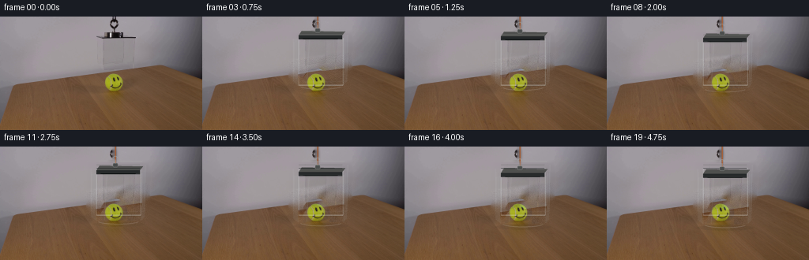
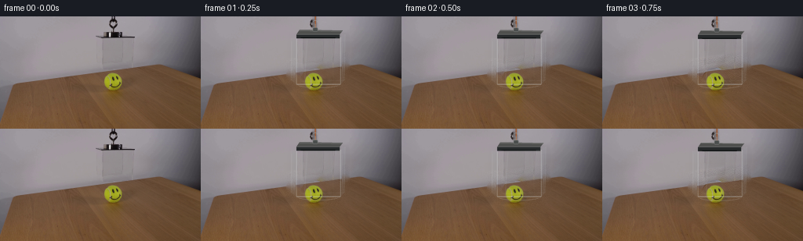
展开代码变化
--- 上一保存版本
+++ 本次保存版本
@@ -244,13 +244,33 @@
return canvas.resize((WIDTH, HEIGHT), Image.Resampling.LANCZOS)
-def render_frame(clean_plate, frame_index):
+def render_frame(clean_plate, source, frame_index):
if frame_index == 0:
return None
d = eased_lowering(frame_index)
- base = Image.fromarray(clean_plate, mode="RGB").convert("RGBA")
+ base = Image.fromarray(clean_plate).convert("RGBA")
overlay = draw_box_overlay(d)
- return np.asarray(Image.alpha_composite(base, overlay).convert("RGB"), dtype=np.uint8)
+ frame = np.asarray(Image.alpha_composite(base, overlay).convert("RGB"), dtype=np.float32)
+
+ # The source's actual wall-to-acrylic optical residual carries the faint
+ # center tint and uneven reflections that are difficult to paint by hand.
+ residual = source.astype(np.float32) - clean_plate.astype(np.float32)
+ x0, x1 = 121, 180
+ y0, y1 = 27, 87
+ patch = np.clip(residual[y0:y1, x0:x1] * 0.82, -27.0, 27.0)
+ shifted_y = int(round(d))
+ fy = d - shifted_y
+ if fy > 0.01:
+ patch = (
+ patch * (1.0 - fy)
+ + np.vstack((patch[1:], patch[-1:])) * fy
+ )
+ dy0 = y0 + shifted_y
+ dy1 = y1 + shifted_y
+ target = frame[dy0:dy1, x0:x1]
+ target += patch
+ frame[dy0:dy1, x0:x1] = target
+ return np.clip(np.rint(frame), 0, 255).astype(np.uint8)
def main():
@@ -260,7 +280,7 @@
frames = [source.copy()]
for index in range(1, FRAME_COUNT):
- frames.append(render_frame(clean, index))
+ frames.append(render_frame(clean, source, index))
frames = np.stack(frames, axis=0)
assert frames.shape == (FRAME_COUNT, HEIGHT, WIDTH, 3)
assert np.array_equal(frames[0], source)
候选 03播放与检查图
点击播放 · 原生 RGB 像素

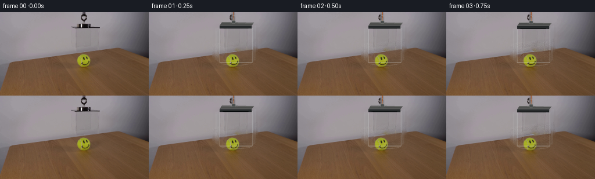
展开代码变化
--- 上一保存版本
+++ 本次保存版本
@@ -21,11 +21,11 @@
[
(110, 17),
(187, 17),
- (190, 29),
- (188, 89),
- (180, 99),
- (119, 99),
- (109, 88),
+ (188, 27),
+ (186, 88),
+ (181, 96),
+ (119, 96),
+ (109, 87),
(109, 27),
],
dtype=np.int32,
@@ -41,10 +41,13 @@
# avoids the directional smears that large-radius inpainting can produce.
wall = np.zeros_like(plate)
for y in range(20, 100):
- left = plate[y, 107].astype(np.float32)
- right = plate[y, 193].astype(np.float32)
+ left = np.median(plate[y, 105:121], axis=0).astype(np.float32)
+ right = np.median(plate[y, 183:197], axis=0).astype(np.float32)
ramp = np.linspace(0.0, 1.0, 86, dtype=np.float32)[:, None]
- wall[y, 108:194] = np.rint(left * (1.0 - ramp) + right * ramp).astype(np.uint8)
+ row = np.rint(left * (1.0 - ramp) + right * ramp)
+ # Tiny correlated texture prevents the rebuilt wall from looking flat.
+ texture = 0.75 * np.sin(y * 0.39 + np.arange(86)[:, None] * 0.23)
+ wall[y, 108:194] = np.clip(row + texture, 0, 255).astype(np.uint8)
region = mask > 0
for y in range(20, 100):
@@ -60,12 +63,25 @@
feather = cv2.GaussianBlur(mask.astype(np.float32) / 255.0, (0, 0), 2.0)[..., None]
plate = np.rint(soft * feather + plate * (1.0 - feather)).astype(np.uint8)
+ # Carry fine wood grain through the repaired tabletop. The texture is
+ # sampled above and below the box and only its variation is transferred.
rng = np.random.default_rng(97)
- grain = rng.normal(0.0, 2.0, (HEIGHT, WIDTH, 1)).astype(np.float32)
+ plate_f = plate.astype(np.float32)
+ grain = rng.normal(0.0, 2.2, (HEIGHT, WIDTH, 1)).astype(np.float32)
table = np.zeros((HEIGHT, WIDTH, 1), dtype=np.float32)
yy, xx = np.mgrid[0:HEIGHT, 0:WIDTH]
table[..., 0] = yy > (68.0 - 0.12 * xx)
- plate = np.clip(plate.astype(np.float32) + grain * table * feather, 0, 255).astype(np.uint8)
+ plate_f += grain * table * feather
+ for y in range(69, 100):
+ for x in range(108, 194):
+ if not region[y, x] or y < 68.0 - 0.118 * x:
+ continue
+ above = plate_f[max(69, y - 6), x]
+ below = plate_f[min(143, y + 6), x]
+ texture = 0.22 * (above - np.mean(plate_f[max(69, y - 8):max(70, y - 4), x], axis=0))
+ texture += 0.22 * (below - np.mean(plate_f[min(143, y + 4):min(144, y + 8), x], axis=0))
+ plate_f[y, x] = 0.93 * plate_f[y, x] + 0.07 * (above + below) * 0.5 + texture
+ plate = np.clip(plate_f, 0, 255).astype(np.uint8)
return plate
可观测工具轨迹
实际执行的命令与返回图片。
命令 1exit 0
/bin/bash -c "pwd && rg --files -g '"'!*__pycache__*'"'"
命令 2exit 0
/bin/bash -c "sed -n '1,240p' prompt.txt"
命令 3exit 0
/bin/bash -c "sed -n '1,280p' GENERATION_RULES.md"
命令 4exit 0
/bin/bash -c 'file first_frame.png && identify first_frame.png 2>/dev/null || true && git status --short'
命令 5exit 0
/bin/bash -c "sed -n '1,320p' artifact_io.py"
命令 6exit 0
/bin/bash -c "python - <<'PY'
from PIL import Image
im=Image.open('first_frame.png')
print(im.size, im.mode)
im.crop((90,0,230,120)).resize((700,600)).save('.tmp/crop.png')
PY"命令 7exit 0
/bin/bash -c "python - <<'PY' mods=['cv2','numpy','PIL','scipy'] for m in mods: try: x=__import__(m); print(m, getattr(x,'__version__','ok')) except Exception as e: print(m,'NO',e) PY"
命令 8exit 0
/bin/bash -c "python - <<'PY'
import cv2, numpy as np
im=cv2.imread('first_frame.png')
g=cv2.cvtColor(im,cv2.COLOR_BGR2GRAY)
# print dark bounding points in relevant top
for y in range(0,45,2):
xs=np.flatnonzero(g[y,:]<100)
if len(xs): print(y, xs.min(),xs.max(), len(xs))
# strongest horizontal/vertical edges
sob=cv2.Sobel(g,cv2.CV_32F,1,0,ksize=3)
for y in range(20,135):
s=np.abs(sob[y,120:180]).sum()
if s>1000: print('vgrad',y,round(float(s)))
PY"命令 9exit 0
/bin/bash -c 'python generate.py'
命令 10exit 0
/bin/bash -c "python - <<'PY'
from PIL import Image
for i in [0,4,8,12,16,19]:
im=Image.open(f'frames/{i:02d}.png')
im.crop((95,0,205,115)).resize((660,690)).save(f'.tmp/f{i:02d}.png')
PY"命令 11exit 0
/bin/bash -c "python - <<'PY'
from PIL import Image
import numpy as np
src=np.asarray(Image.open('first_frame.png').convert('RGB')).astype(float)
clean=np.asarray(Image.open('.tmp/clean_plate.png').convert('RGB')).astype(float)
r=(src-clean)
vis=np.clip(128+r*4,0,255).astype('uint8')
Image.fromarray(vis).save('.tmp/residual_x4.png')
# box area only crop
Image.fromarray(vis[10:105,100:200]).resize((800,760)).save('.tmp/resid_crop.png')
# stats
for box in [(110,18,190,90),(110,18,190,65),(120,27,178,65)]:
x0,y0,x1,y1=box
rr=r[y0:y1,x0:x1]
print(box,rr.mean((0,1)),rr.std((0,1)),np.percentile(rr,[1,5,50,95,99],axis=(0,1)))
PY"命令 12exit 0
/bin/bash -c "python - <<'PY'
import cv2, numpy as np
im=cv2.imread('first_frame.png')
# print local mean brightness / rows columns
rgb=cv2.cvtColor(im,cv2.COLOR_BGR2RGB).astype(float)
for y in range(15,95,5):
print(y, [int(rgb[y,x].mean()) for x in [105,110,115,120,125,130,140,150,160,170,180,185,190,195]])
print('cols')
for x in [108,110,112,115,118,120,122,125,130,140,150,160,170,178,180,184,188,192]:
print(x,[int(rgb[y,x].mean()) for y in [20,25,30,40,50,60,70,80,85,90]])
PY"命令 13exit 0
/bin/bash -c "python generate.py && python - <<'PY'
from PIL import Image
for i in [4,12,19]:
Image.open(f'frames/{i:02d}.png').crop((95,0,205,115)).resize((660,690)).save(f'.tmp/r{i:02d}.png')
PY"命令 14exit 0
/bin/bash -c "python - <<'PY'
import cv2,numpy as np
im=cv2.imread('first_frame.png')
g=cv2.cvtColor(im,cv2.COLOR_BGR2GRAY)
# top dark comp
for y in range(0,30):
xs=np.flatnonzero(g[y,130:165]<120)+130
if len(xs): print(y,xs.min(),xs.max(),list(xs))
# boundary table edge per x from gradients
for x in [105,110,115,120,130,140,150,160,170,180,185,190,195]:
col=g[:,x].astype(float)
grad=np.abs(np.diff(col))
y=67+np.argmax(grad[60:85])
print('edge',x,y,col[y-1],col[y],col[y+1])
PY"命令 15exit 0
/bin/bash -c "python - <<'PY'
from PIL import Image
import numpy as np
im=np.asarray(Image.open('first_frame.png')).astype(float)
# output wall lines as means in left [105,120], right[183,196], table rows
for y in [20,25,30,35,40,45,50,55,60,63,65]:
print(y, 'wallL',im[y,105:120].mean(0).round(1),'wallR',im[y,183:196].mean(0).round(1))
for y in [72,75,80,85,90,95,100,105,110,120]:
print(y, 'tableL',im[y,105:120].mean(0).round(1),'tableR',im[y,183:196].mean(0).round(1))
PY"命令 16exit 0
/bin/bash -c 'python generate.py'
命令 17exit 0
/bin/bash -c "python - <<'PY'
from pathlib import Path
import numpy as np
from PIL import Image
src=np.asarray(Image.open('first_frame.png').convert('RGB'))
frames=np.stack([np.asarray(Image.open(f'frames/{i:02d}.png').convert('RGB')) for i in range(20)])
z=np.load('pixels.npz')['pixels']
print('frames',frames.shape,'dtype',frames.dtype)
print('pixel_00_exact',np.array_equal(frames[0],src))
print('all_changed',np.sum(np.any(frames"'!=frames[0],axis=3),axis=(1,2)).tolist())
print('"'npz',z.shape,z.dtype,'first_ok',np.array_equal(z[...,0],(src[...,0].astype(np.uint32)<<16)|(src[...,1].astype(np.uint32)<<8)|src[...,2]))
print('artifacts',[(p.name,p.stat().st_size) for p in sorted(Path('.').glob('*')) if p.is_file()])
PY"命令 18exit 0
/bin/bash -c "python - <<'PY'
import json
from pathlib import Path
p=Path('index.html').read_text()
print('index_size',len(p),'has_payload','__DATA__' not in p,'frames',len(json.loads(p.split('const DATA = ',1)[1].split(';</script>',1)[0])['deltas'])+1 if False else 'bundled')
PY"命令 19exit 0
/bin/bash -c 'rg -n "DATA|deltas|first|const" player_template.html | head -20 && ls -lh index.html pixels.npz inspection.png frames/00.png frames/19.png'
命令 20exit 0
/bin/bash -c "python - <<'PY'
import cv2, numpy as np
for i in [0,1,5,10,15,19]:
im=cv2.imread(f'frames/{i:02d}.png')
g=cv2.cvtColor(im,cv2.COLOR_BGR2GRAY)
# dark lid mean row: use pixel 146 col, darkest in y 0:100
col=g[:100,146]
y=int(np.argmin(col[18:95]))+18
print(i,'darkest cord/lid y',y,'val',int(col[y]),'std',round(float(g.std()),2))
PY"视觉工具实际返回图片 1

视觉工具实际返回图片 2
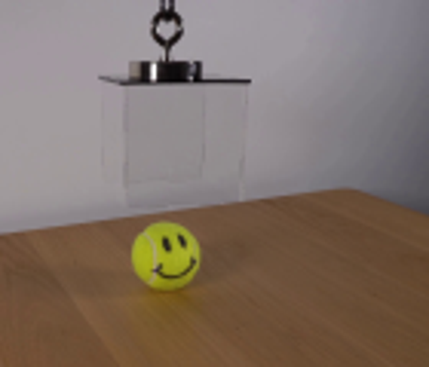
视觉工具实际返回图片 3

视觉工具实际返回图片 4
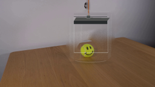
视觉工具实际返回图片 5
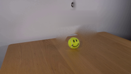
视觉工具实际返回图片 6
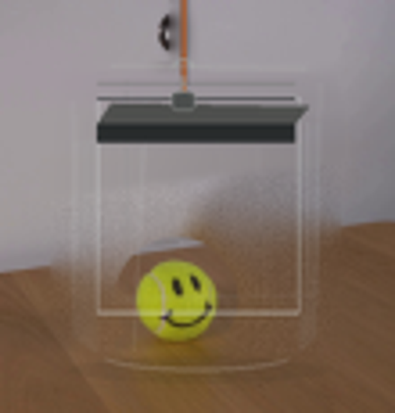
视觉工具实际返回图片 7
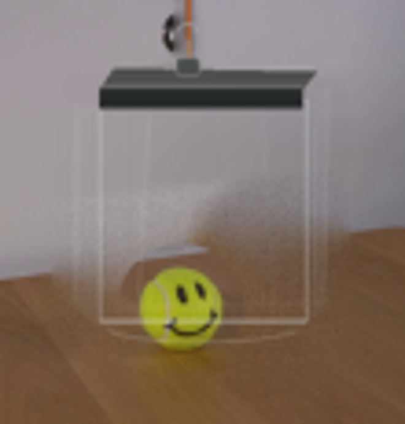
视觉工具实际返回图片 8
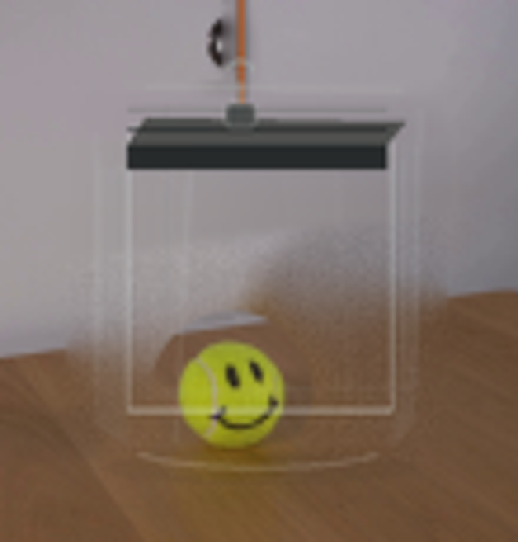
视觉工具实际返回图片 9
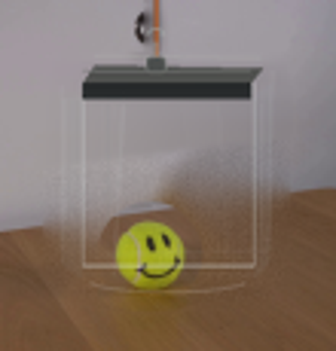
视觉工具实际返回图片 10
视觉工具实际返回图片 11

视觉工具实际返回图片 12
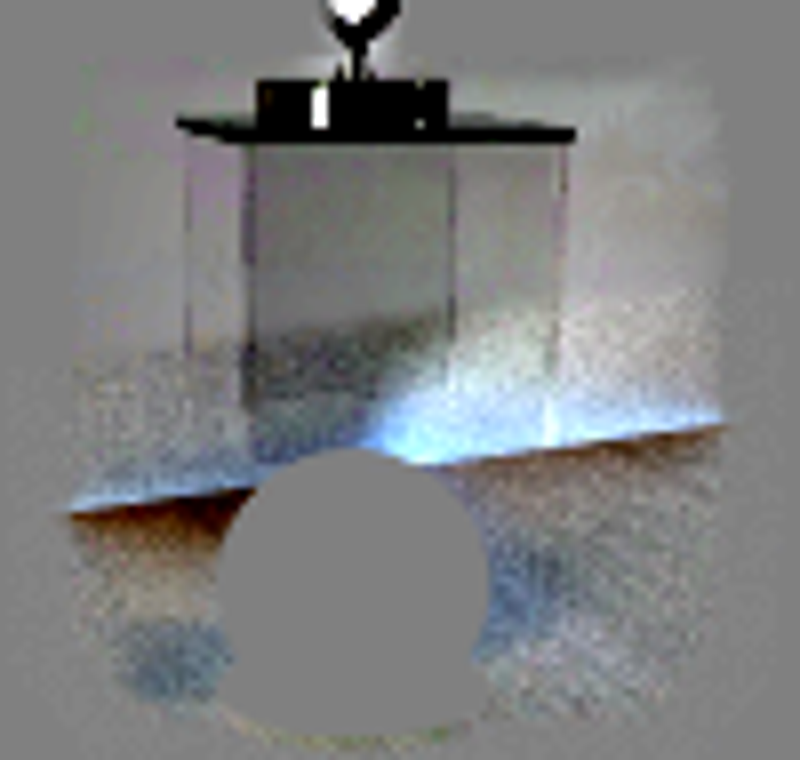
视觉工具实际返回图片 13
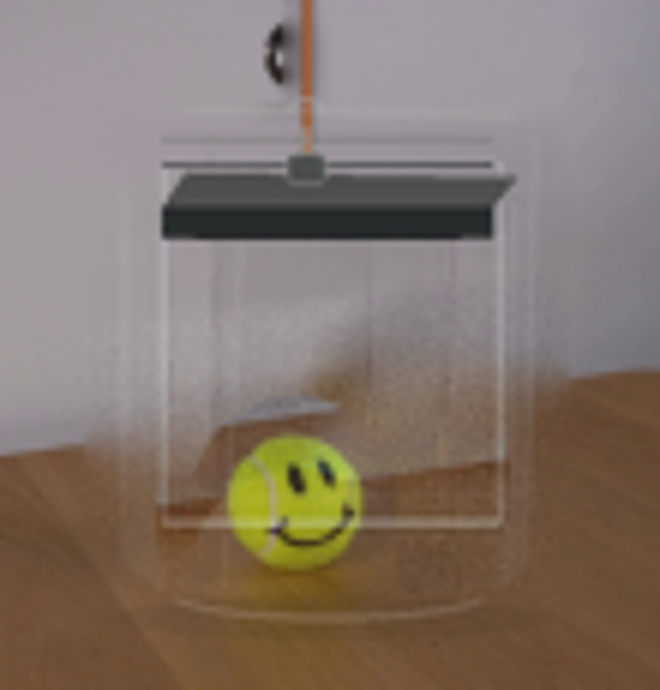
视觉工具实际返回图片 14
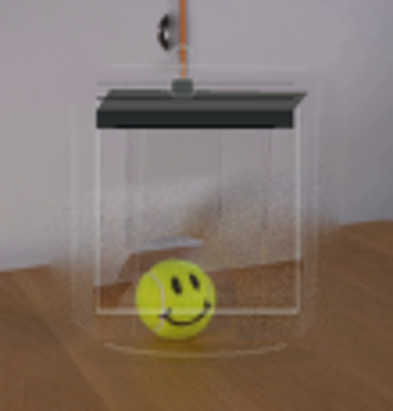
视觉工具实际返回图片 15
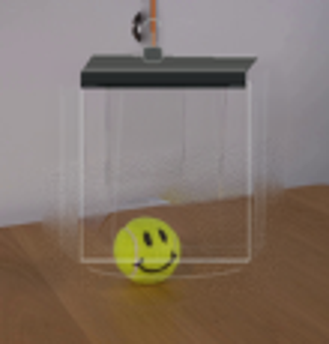
视觉工具实际返回图片 16
保存候选 3 份；完成命令 20 次；可验证图片返回 16 张。原始 API 响应与完整日志保留在本地。